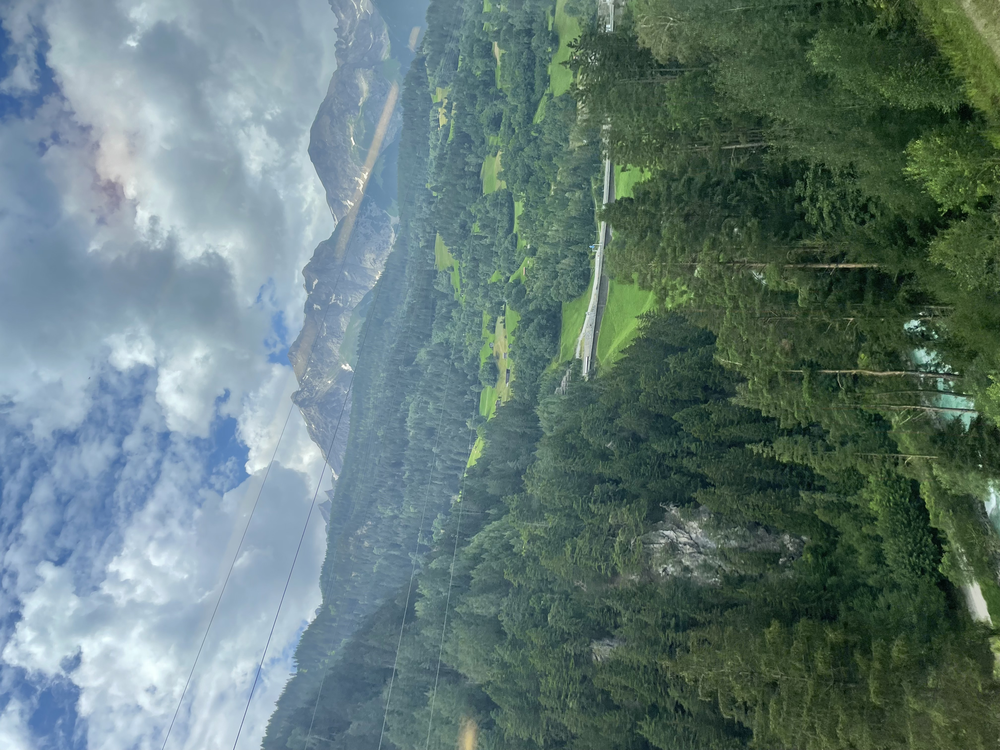

Weekly Coffee #6
December 22, 2024
Unfortunately, I have been slacking, and Weekly Coffee has become more like Monthly Coffee. I am back in Newport again for Christmas, which has been a nice chance to slow down and relax. Recently, it has felt a bit like I am being pulled in 3 different directions, with close friends and family in San Diego, San Luis Obispo, and Orange County. It is beautiful to have people and places that I love spread out all over California, and it is fun to have a dynamic pattern of visiting everyone and driving up and down the coast a couple of times a month, but it definitely has been an active priority of mine to maintain focus and presence where I am at. Without further ado...
What’s Been Up:
- We had our work Christmas party last week. Overall, it was not too eventful, but it was held at the Hotel del Coronado in San Diego, which was super cool to see for the first time. The hotel is beautiful and has been in a bunch of movies, including Some Like It Hot, which also happens to have the greatest final scene of all time
- I will be joining the leadership for my young adults group at my church in Carlsbad. I am excited to get more involved and start volunteering more of my time.
- My friend Max bought a full set of medieval armor in an antique shop in Orange.
What I've Been Reading/Listening To/Watching:
- I got my Spotify Wrapped for 2024 a couple of weeks ago.
- Here are my top listened songs if anyone is curious.
- I was pretty shocked to see that I spent 77,265 minutes listening to music in 2024. 3.5 hours a day definitely feels like a lot; it could be good to cultivate more time spent in silence.
- Since my last newsletter, I had a 5-day period of intensely listening to Joe Rogan's podcast. Since then, though, I have decided to stop listening, to ground myself a bit more in real life and a bit less in politics. Here were the episodes I listened to and found particularly interesting, though.
- Donald Trump, JD Vance, Elon Musk
- I thought it was interesting to hear from the incoming administration in a context outside debates or rallies. Although I don't agree with everything they put forward, there was something a lot more humanizing about seeing them on a podcast, discussing the issues that are important to them, and their interests outside politics. The 1:1 podcast format definitely encourages a lot more civility and intelligent discussion than most of the political formats I am used to.
- Jonathan Haidt
- He is a social psychologist who spoke a lot about the effects of social media on children. Although I have long been convinced that social media has an almost entirely negative effect on society, Haidt finally convinced me that it is a strong enough problem to warrant government intervention, which I am typically fundamentally opposed to.
- Peter Thiel
Song of the Week:
Skin - Hans Williams
I think 2025 is the year I start listening to more folk music ...
Picture of the Week:

I always knew it was ambitious to try and have a new picture each week for Weekly Coffee, and I failed again this week. So here's a picture of the Swiss Alps from my trip to Europe last summer.
See you next week!
{kind=link}
{kind=link}